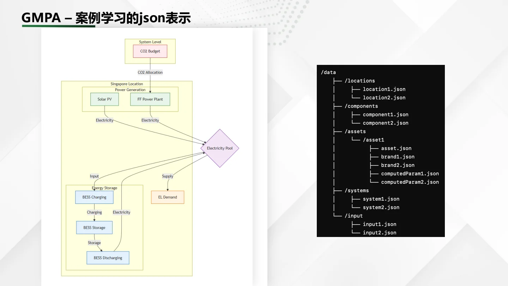
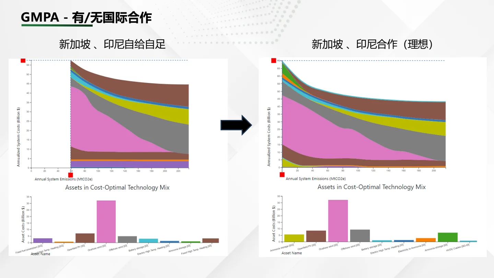
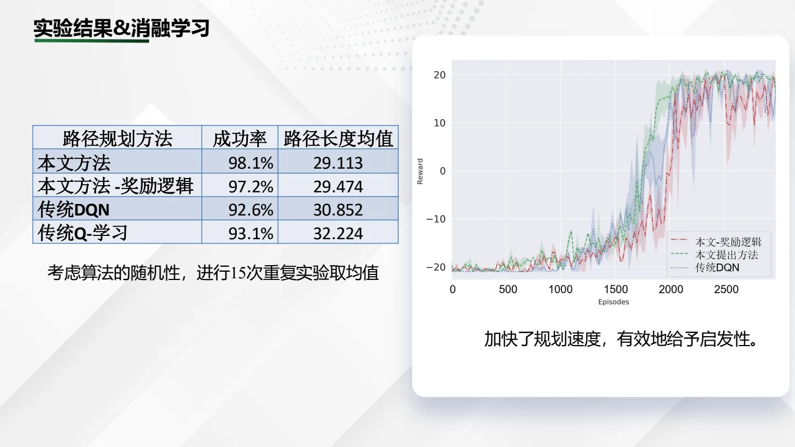
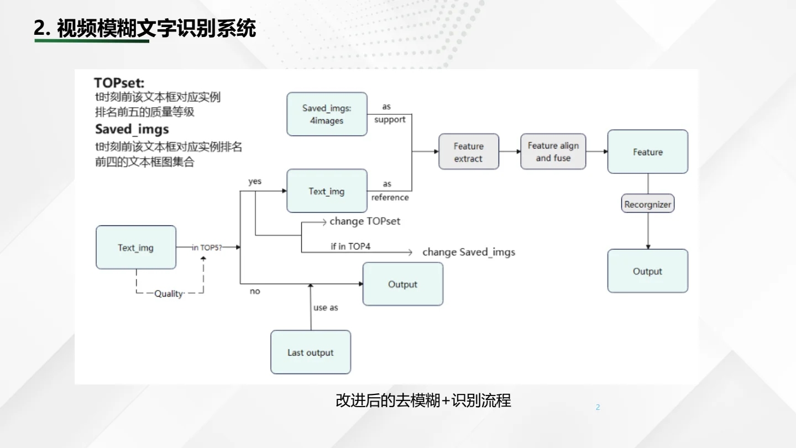
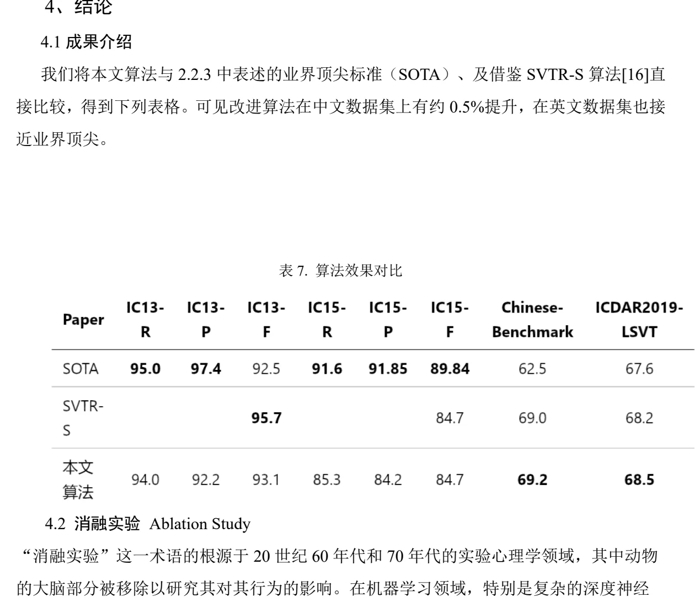

Robotics systems
Media I/O, cross-device stream routing, ROS2 integration, perception-to-control loops, and manipulation tooling at InsightOS.
C++LinuxROS2RGB-DIPC
01 / 08 · About
R&D engineer building the connective layer between sensing, models, and machines.
I work across robot media infrastructure, applied computer vision, and model-to-product pipelines. The through-line is practical: make inputs dependable, expose the right system boundary, and keep evaluation close to the artifact.
Media I/O, cross-device stream routing, ROS2 integration, perception-to-control loops, and manipulation tooling at InsightOS.
Industrial wastewater vision PoCs and optimization-ready climate case studies at SIMTech, A*STAR.
HIT control engineering, then NUS-ISS systems analysis: a path from algorithms to software and operating constraints.
02 / 08 · Current work
One visible behavior, supported by two engineering layers: perception-to-control and reusable robot media infrastructure.
Manipulation path · reported in résumé
The résumé also reports visual and tactile feedback plus a dexterous-hand runtime. Those internals are not public artifacts.
Runtime substrate
memfd-based IPC for stream reuse.insightos:// routing separates device access from application logic.Observed artifact · portrait video · click to load.
The hosted copy did not play. Use “Open file” to retry directly.
03 / 08 · Industrial computer vision
Two wastewater PoCs: expert-aligned dose adjustment from underwater video, and RGB oil-film early warning.
Implemented PoC · best-supported scope
Second PoC
An RGB-only early-warning concept for inspection and skimming. Segmentation, persistence rules, and alarm hysteresis belong to the production path; they are not proven deployment results here.
Model boundary
04 / 08 · SIMTech, A*STAR
Structured data work for climate scenario analysis during MOYA’s 2024 spin-off and GMPA Phase II period.
Contribution


05 / 08 · HIT capstone
A grid-world study of how reward design and stale observations affect model-free dynamic navigation.
Implemented study

06 / 08 · National-level student project
A team pipeline for text detection, cross-frame evidence, restoration, and final recognition.
Team system
Best-supported personal contribution
The final acceptance report assigns Yixin the Transformer-inspired OCR implementation and coupling of recognition features with the upstream deblurring network.


07 / 08 · LLM evaluation & open source
Merged changes, test descriptions, and an openly readable evaluation report provide inspectable proof beyond résumé prose.
Extended distance metrics and filtering, then added tests and examples around the new query behavior.
Added SQ/BQ vector-index quantization levels and the corresponding distance constraints for OceanBase.
Agricultural knowledge-base augmentation, closed/open questions, prompt injection, and jailbreak testing.
Open education contribution
Résumé-described contribution: proofread localized course material, aligned terminology/API usage, reproduced prompts, and added experiments for the chatbot chapter. The current README does not list Yixin among its named core contributors, so this deck describes tasks rather than elevating the title.
08 / 08 · Evidence ledger
Structural validity is not scientific verification. This portfolio keeps that distinction visible.
Inspectable now
Review queue
Not claimed
If you want to inspect the system boundary, evaluation setup, or failure cases behind any project, that is the conversation I am prepared to have.
Slide 1 of 8: About